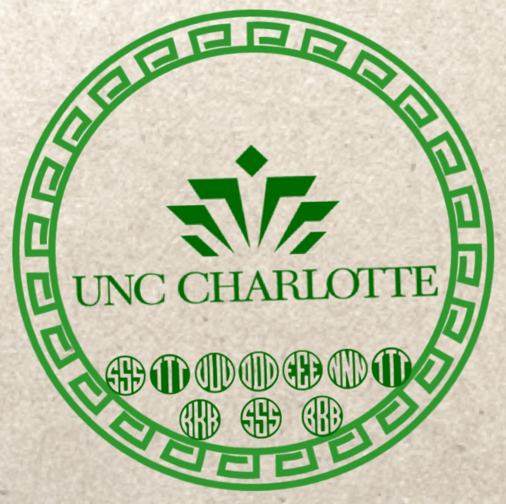

Kiarash Shirani Bidabadi
UNC CHARLOTTE Student
Please click
here
to view my resume
You can click
here
to view my ITIS 3135 Introduction Page
Welcome to My UNCC Student Website Home Page

My Customized UNCC Student Logo (desigend by Kiarash S. B.)